| Key |
| Political Events |
Blue |
| Social Events |
Purple |
| Military Events |
Red |
| Economical Events |
Green |
- 1776
- -Common Sense: One of the most famous works of the Revolutionary era, this pamphlet written by Thomas Paine was written in a simple tone and attempted to convince people to fight for independence from Britain. Paine appealed to the common man.
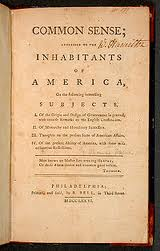
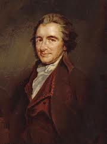
- -Written by Thomas Jefferson and other revolutionaries, the Declaration of Independence declared the independence of America from Britain. This document inspired and ignited the hearts of many Americans, leading to the American victory against Britain. Today, this document is often referred to what made America what it is now.
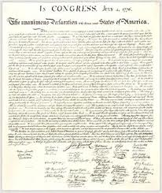
- 1777
- - The Battle of Saratoga was two battles fought near Saratoga, New York. Many regard the Battle of Saratoga as the turning point in the Revolutionary War. British General Burgoyne was forced to surrender after he lost nearly triple the amount of men that the Americans lost. Also, the French were quick to support the Americans after seeing the Americans were capable of winning the war. This battle turned shifted the advantage from the British to the Americans, later allowing to Americans to win their freedom.
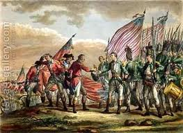
- -The Articles of Confederation were America�s first form of government. It gave states much more power than the federal government. Many of its laws came from British laws that angered the Americans, so quartering and federal taxing were illegal. Although it was proven to be very weak, it showed people that a weak central government would not function well, and set a precedent for the Constitution.
- 1781
- -The Battle of Yorktown was the final battle in the American battle for independence; it was fought in Yorktown, Virginia. American and French soldiers overpowered the weakened British, and in the end British General Cornwallis surrendered to General Washington and Rochambeau.
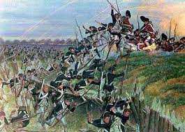
- 1785
- -Because Congress had no spower to directly levy taxes, the federal government needed a way to make money. So, the Land Ordinance of 1785 was adopted to sell land in the Old Northwest. The lands were to be surveyed the land and split into 36 square mile sections, with one school. It was one of the few strengths of the Articles of Confederation, and allowed the orderly settlement of the West. The Land Ordinance also created the standard of public schools.
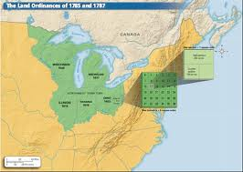
- 1786
- -Shays' Rebellion: The rebellion in western Massachusetts was led by Daniel Shays and others war veterans who had lost their farms to taxes and debts. The rebellion showed the frustration of people with the government and also the weakness of the Articles of Confederation as it could not raise an army to stop the rebels.
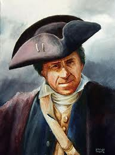
- 1787
- -The Northwest Ordinance of 1787 stated that territories would be admitted as states if they had 60,000 inhabitants. Also, it banned slavery in all of the Old Northwest. Similar to the Land Ordinance of 1785, the ordinance helped populate western territory in an orderly fashion. The banning of slavery in this territory caused tension in the mid-1800s between the North and South over free and slave territories.
- -The Great Compromise:During the creation of the Constitution, one of the main issues was the representation in Congress. Small states wanted equal representation for all states, while larger states wanted representation based on population. So, a compromise was made, creating a House with representation based on population and a Senate with equal representation for all states. In the end, this compromise caused many states to swing in favor of the Constitution.
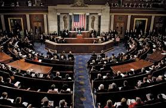
- -After realizing the Articles of Confederation was an extremely weak form of government, Congress created the Constitutional Convention to edit the Articles. However, with James Madison and Alexander Hamilton leading the way, the Convention ended up creating a whole new outline for government, the Constitution. The Constitution has run the country from the day it was created until now, and is the single most important document in United States history.
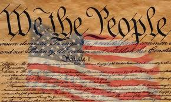
- 1789
- -George Washington became th first president of the United States. He was the first president who was not part of a political party.
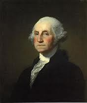
- 1791
- -When forging the Constitution, many were against the Constitution because the lack of a bill of rights. So, one was promised, and many then voted for the Constitution to be signed and put into action. The promise of the Bill of Rights was the essential factor of the Constitution being our government today. The Bill of Rights contains the first ten amendments to the Constitution; they serve to protect the basic rights of the people.
- -The First Bank of the United States was created by Secretary of Treasury Andrew Hamilton. This bank was intended to hold federal money, loan out money, establish credit for the country, and standardize currency in the country. Many antifederalists believed it granted the government too much power, but it still eventually passed.
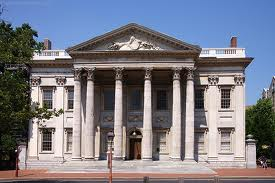
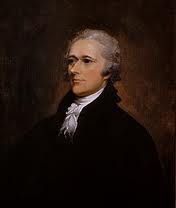
- -Whiskey Rebellion: Rye and corn farmers in west Philadelphia were angry with Hamilton�s new tax on whiskey. They used violence to stop officials that came to collect the tax. In 1794, 500 farmers attacked tax inspector John Neville�s home in anger. However, President Washington�s army was quick to end the revolt. This rebellion marked the first use of Washington�s army, and also that the new government was willing to use its army to defend against violence.
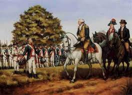
- 1792
- -The New York Stock and Exchange Board, later simply the New York Stock Exchange, was formed in 1792 on the well-known Wall Street. The exchange was created to allow people to sell and trade stocks of companies. It provides auctions and other means of selling stocks. Today, it remains the largest and best place to sell and trade stocks to other companies.

- 1793
- -The cotton gin, which picks the seeds out of cotton, was invented by Eli Whitney. This invention is one of the most significant in American history. After the invention of the cotton gin, Southern planters shifted from crops such as tobacco and indigo to solely cotton. Cotton required slaves to pick and manufacture, exponentially increasing the amount of slaves traded to the South. This necessity for slaves would lead to the Civil War in 1863.
- 1797
- -The XYZ Affair: Americans did not enjoy having their merchant ships seized by French privateers and warships. Thus, President Adams sent diplomats to France to negotiate. French ministers X, Y, and Z (their names were never revealed) wanted bribes in return for diplomatic access. The American delegates refused. News of the XYZ affair angered Americans. Hamiltonian Federalists now wanted war against France to get French and Spanish territories in North America. Adams, however, declined to go to war because the US military was not powerful enough to challenge France. The XYZ affair destroyed Franco-American relations and set the stage for Federalist victory in the congressional elections of 1798, since the Federalists were anti-French and Americans now hated the French.
- 1798
- -The Principle of Replaceable Parts: Before, every single product was individually made, and because of this, if one component broke, a custom replacement needed to be made. This was not efficient. Eli Whitney came up with the idea of having machines make each part identically. It later became the basis for mass production, which contributed significantly to America�s industrial growth.
- -The Alien and Sedition Acts: Americans hated France after the XYZ Affair. Federalists� anti-French policies thus won them a majority in both houses after the congressional elections of 1798. To cement their victory, they decided to enact laws to weaken the opposition, to ensure that they would have an advantage in years to come. Federalists passed the Naturalization Act, which increased the number of years before an immigrant could qualify for US citizenship from 5 to 14, because most immigrants voted Democratic-Republican. They also passed the Alien Acts, which gave the president the power to deport and detain dangerous aliens. Finally, they passed the Sedition Act, which prohibited newspapers from criticizing the government, imprisoning and fining them if they did not comply. The Alien and Sedition Acts did not have a great effect, because Republicans gained a majority in Congress after the election of 1800, and repealed or expired them.
- 1799
- -The Kentucky and Virginia Resolutions: The Alien and Sedition Acts angered Republicans. The Kentucky legislature, influenced by Thomas Jefferson, and the Virginia legislature, influenced by James Madison, introduced �nullification� resolutions, allowing states to nullify Congressional laws. Both resolutions invoked the �compact� argument, stating that the federal government was a compact of states, and thus if federal acts broke the compact, then states had the right to nullify the federal act. This set the stage for the nullification controversy in the 1830s.
- 1800
- -The Election of 1800: Because of the Alien and Sedition Acts, and Federalist taxation to build up the Navy, the Federalists lost votes, causing them to lose both the presidency and Congress. Thomas Jefferson and Aaron Burr, both Republicans, tied in the Electoral College. Thus, by the Constitution, the House of Representatives voted to break the die. At that time, the Federalists still controlled the House. They voted for Jefferson, because he was less dangerous and more upright than Burr. This was the first time power transferred from one party to another voluntarily, which showed the strength of American democracy. The effect was Republican domination of the executive and legislative branches of government and a democratic precedent.
- -The Midnight Judges: Right before leaving office, Adams signed many Federalist judge appointments and left them on the presidential desk for Jefferson to approve. However, Adams told Secretary of State James Madison to not deliver the commissions to the Federalist judges. This angered William Marbury, one of the judges, who sued Madison for his commission. The effect was that Marbury v. Madison (1803) became a Supreme Court case.
- 1803
- -Ratification of the 12th Amendment: It was a reaction to electoral troubles in the elections of 1796 and 1800. Before the 12th Amendment, the president would be the candidate with the most electoral votes and the vice-president would be the candidate with the second most. However, this caused 2 people with completely different ideologies to share the White House, hindering effective politics. The 12th Amendment allowed Presidents and Vice Presidents to run on tickets and made it so people ran for either President or Vice President, not both. The effect was that the multi-party system solidified in America, since the rise of political tickets complemented the rise of political parties.
- -Marbury v. Madison: Directly caused by Jefferson�s refusal to deliver the Federalist judging commissions, this was the first important decision made by John Marshall. Marshall agreed that Marbury had a right to the commission, because of the Judiciary Act of 1789, but the Judiciary Act was unconstitutional, because it gave the Judiciary unconstitutional power, so he could not legally obtain the commission. The effect was that Marshall established judicial review, giving the Supreme Court the power to decide if executive or legislative acts were constitution or not.
- -The Louisiana Purchase: Napoleon originally wished to increase the size of the French empire in the Americas. However, in 1803, he gave up on this idea because Santo Domingo rebels, led by Toussaint l�Ouverture, overthrew French rule and killed many French, and because he needed to concentrate his resources to fight England. In addition, Western American farmers relied on New Orleans to ship goods to the world. When Spain revoked the right of deposit in 1802, Westerners wanted the government to intervene to protect their economic livelihoods. Finally, Jefferson was also afraid that having a foreign power in New Orleans would lead to foreign conflicts. Thus, Jefferson sent diplomats to France to buy New Orleans and territories to its East for $10 million. However, French diplomats offered New Orleans and the Louisiana Territory for $15 million. The American diplomats accepted. It led to a minor Constitutional crisis, because Jefferson believed in a strict interpretation of the Constitution and the Constitution never specified the purchasing of foreign lands. The Senate ratified the purchase. The grander consequences were that the size of the United States increased by half; one foreign power stopped bordering the United States; the Western frontier increased; Jefferson�s dream of an agricultural nation were strengthened; Jefferson�s popularity increased; the Federalists became weakened and sectionalist, claiming the majority of support in New England. It also led to the Lewis and Clark Expeditions.
- 1804
- -The Lewis and Clark Expedition: Jefferson persuaded Congress to send a scientific expedition to the lands west of the Mississippi River. In 1804, Captain Meriwether Lewis and Lieutenant William Clark set off on the journey. After reaching the Pacific coast, they returned back home in 1806. The expedition increased scientific and geographic information about the West, allowed contact with native tribes, and increased the legitimacy of American claims to Oregon.
- 1807
- -The Embargo Act: There was serious anti-British sentiment in the US. Jefferson did not want to resort to war. He instead created an embargo that banned American merchants from sailing to foreign ports. Jefferson hoped that the embargo would force Britain to stop violating the rights of Americans. However, the embargo hurt the US more than it hurt the United Kingdom, because the UK could just rely on South American goods. The US economy was destroyed, especially affecting Northern shipbuilders and merchants. It led to a short-lived New English secession movement and a weakening of the embargo. In the long term, the Embargo Act was beneficial for American industry, because it became more independent afterwards. By forcing manufacturers to rely on US goods and markets, it led to more interconnectedness between the three sections. Destruction of American industry helped Americans rebuild it from the ground up, which laid the foundations for American industrial power.
- 1811
- -The Rise and Fall of Tecumseh: Settlers had slowly encroached westward over the years, forcing Native Americans off their traditional lands. Tecumseh and his brother Prophet tried to unify all of the native peoples east of the Mississippi. The British aided them, because they wanted to weaken America. Tecumseh promoted Indian culture. In 1811, General William Henry Harrison defeated native forces at Tippecanoe. In 1813, he defeated combined native and British forces, killed Tecumseh, and thus destroyed native resistance east of the Mississippi. The defeat of the natives allowed for greater colonial expansion into Ohio and the southwestern frontier.